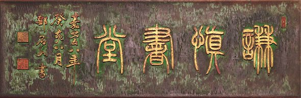

謙慎書道会とは
謙慎書道会は、明治･大正屈指の大家、西川春洞の系統を中心とする団体です。
『謙慎』とは、西川春洞の堂号に由来するもの。

会の概要
| 名称 | 謙慎書道会 |
|---|
| 名称の由来 | 西川春洞の堂号『謙慎』に由来 |
|---|
| 系統 | 明治･大正屈指の大家、西川春洞の系統を中心とする団体 |
|---|
| 創立 | 昭和8年（1933）5月 |
|---|
| 創立者 | 西川寧・林祖洞・江川碧潭・鳥海鵠洞・金子慶雲 |
|---|
| 第1回展 | 昭和8年7月（東京府美術館） |
|---|
| 部門 | 漢字・かな・篆刻の三部門
（篆刻部は第4回展で設置、かな部は昭和57年に新設） |
|---|
| 基本理念 | 古典を尊重し、古典に学び、古典に立脚した学書の姿勢で書の本質を追及する |
|---|
| 事務局 | 〒102-0072 東京都千代田区飯田橋3-2-4 UNOビル4階
TEL：03-3221-1136／FAX：03-3221-1138 |
|---|
創立までの歩み
| 年 | 事項 |
|---|
| 明治37年 | 西川春洞門の高弟達による謙慎同窓会創立
首唱 諸井春畦、豊道春海、武田霞洞等12名 |
|---|
| 昭和5年 | 謙慎書道会の前身、春興書道会創立 |
|---|
| 昭和8年5月 | 西川寧・林祖洞・江川碧潭・鳥海鵠洞・金子慶雲により謙慎書道会創立 |
|---|
| 昭和8年7月 | 第1回展開催（東京府美術館） |
|---|
現在の役員
| 顧問 | 梅原清山、新井光風、樽本樹邨 |
|---|
| 会長 | 鈴木春朝 |
|---|
| 副会長 | 田中節山 |
|---|
| 理事長 | 髙木聖雨 |
|---|
| 副理事長 | 市澤静山、角元正燦 |
|---|
| 事務局長 | 牛窪梧十 |
|---|
※旧サイト「謙慎書道会とは」ページの記載によります。最新の役員は組織・役員（PDF）をご覧ください。
歴代理事長
| 代 | 氏名 | 備考 |
|---|
| 初代 | 青山杉雨 | 昭和36年就任。副理事長に殿村藍田・上條信山 |
|---|
| 第二代 | 淺見筧洞 | |
|---|
| 第三代 | 成瀬映山 | |
|---|
| 第四代 | 新井光風 | 平成16年就任 |
|---|
| 第五代 | 樽本樹邨 | |
|---|
会のあゆみ
| 時期 | 期間 | 主なできごと |
|---|
| 第一期 | 昭和8年の創立〜大戦終結 | 西川寧ら5人の集団的指導態勢で始まる。第4回展で西川寧の提唱により篆刻部を設置。終戦後は西川寧が築地本願寺で書談会を開き、碑学的伝統を守る。 |
|---|
| 第二期 | 戦後〜昭和36年 | 会員構成が今日のような理事制を敷くまでの時期。 |
|---|
| 第三期 | 昭和36年〜 | 青山杉雨が初代理事長、副理事長に殿村藍田・上條信山。強力な指導体制のもと発展。昭和57年にかな部を新設し、漢字・かな・篆刻の三部門となる。 |
|---|
| 第四期 | 〜平成19年 | 淺見筧洞が第二代、成瀬映山が第三代理事長に就任。平成18年に淺見筧洞、平成19年に成瀬映山・小林斗盦が逝去。 |
|---|
| 平成16年以降 | 平成16年〜現在 | 新井光風が第四代理事長に就任し、第70回展記念「日中書法の伝承」展を開催。第五代理事長 樽本樹邨のもと、第77回展で「文字の動物園」を開催するなど書の普及に注力。 |
|---|
会の歴史（旧サイト本文）を読む
その後戦前の空白を経て、春洞の息 西川寧の書と深い学殖を背景に、卓越した理念のもと謙慎の指標となり、所謂－西川イズム－が生れました。
また後継者青山杉雨の登場により大所高所に立っての見地から、作品追求と政治的視野を広げ、かつてない黄金時代を築きました。後進の育成が功を奏し、若手の台頭には目を見はるものがありました。その情熱こそ、謙慎隆盛の母胎であり、素因といえるものでしょう。
謙慎創立より、現在に到るまでを大別すると、第一期は創立の昭和８年から、大戦終結まで。西川寧等５人の集団的指導態勢で始まり、終戦後は独り西川寧のみ世の敗戦の痛手にも関わらず、復興の意思強く、築地本願寺にて書談会を開き、書道界の木鐸として碑学的伝統を守りました。第４回展のときには、西川寧の提唱により篆刻部を設置しました。
次いで戦後から会員構成が今日のような理事制を敷く昭和３６年までを第二期とし、第三期は青山杉雨が初代理事長となり、副理事長には殿村藍田、上條信山を擁し、その強力な指導体制のもと、いよいよ発展の一途を辿ることになります。昭和５７年には、かな部も新設され、謙慎書道会の活動分野が漢字・かな・篆刻の三部門となりました。
第四期は、浅見筧洞が第二代理事長に就任、その後、成瀬映山が第三代理事長としてその重責を全うしました。第１回展より出品をしていた淺見筧洞は平成１８年逝去、最高顧問であった成瀬映山、小林斗盦も平成１９年に相次いで急逝し、偉大な指導者が旅立たれました。
平成１６年より第四代理事長に就任した新井光風は、第70回展記念「日中書法の伝承」展を開催。古典の重要性を示唆し、書の本質を再認識させる機会として、後世に残る企画となりました。第五代理事長には樽本樹邨が就任。東京都美術館のリニューアルに伴い様々な催しを企画、第77回展では「文字の動物園」を開催するなど、書の普及に力を注ぎました。
現在、顧問 梅原清山、新井光風、樽本樹邨、会長 鈴木春朝、副会長 田中節山、理事長 髙木聖雨、副理事長 市澤静山、角元正燦、事務局長 牛窪梧十という新しい陣容は、類を見ない伝統と歴史を受け継ぎ、謙慎の基本理念である古典を尊重し、古典に学び、古典に立脚した学書の姿勢で書の本質を追及し、着実に一歩一歩前進をしています。
沿革（年譜）
昭和８年〜昭和40年
| 年 | 月・日 | 事項 |
|---|
| 昭和８年 | 5 | 謙慎書道会創立
〔創立役員〕西川 寧、林 祖洞、鳥海鵠洞、江川碧潭、金子慶雲 |
|---|
| 7･1－5 | 第一回謙慎展（府美術館）
入選点数四四〇点、無鑑査出品一一七点、計五五七点
謙慎賞二十五名、褒状九十一名 |
| 昭和９年 | 7･15－21 | 第二回謙慎展 |
|---|
| 昭和10年 | 7･15－21 | 第三回謙慎展 |
|---|
| 昭和11年 | 7･19－26 | 第四回謙慎展（府美術館）
西川 寧の提唱により篆刻部を設置（西川 寧の刻印十数顆も展示）
参考室に西川、江川収集の漢碑の拓本展示 |
|---|
| 昭和12年 | 6･25－7･1 | 第五回謙慎展（府美術館）
一般部・少年部に中年部（十六歳-二十歳）を新設。西川春洞遺墨数十点を特別室に展示 |
|---|
| 7 | 西川 寧、雑誌『書道』主幹就任 |
| 昭和13年 | 7 | 第六回謙慎展
参考室は明治・大正作家展（岸田吟香ほか） |
|---|
| 西川 寧、外務省在外特別研究員として北京に留学 |
| 昭和14年 | | 『西川春洞先生遺墨』発行 |
|---|
| 昭和15年 | | 第八回謙慎展 |
|---|
| 昭和16年 | | 西川 寧著『支那の書道』（東京・興文社刊） |
|---|
| 昭和18年 | | 第十一回謙慎展 |
|---|
| 昭和22年 | | 第十二回謙慎展（西川春洞三十三回忌追善・東京美術倶楽部） |
|---|
| 昭和24年 | 12 | 西川 寧主幹、雑誌『書品』創刊 |
|---|
| 昭和26年 | 7･18－24 | 第十三回謙慎展（都美術館） これより第七十一回展まで毎年開催
西川春洞先生記念賞新設 |
|---|
| 昭和30年 | | 西川 寧、日本芸術院賞受賞 |
|---|
| 昭和31年 | 7 | 青山杉雨主幹、雑誌『近代書道グラフ』創刊 |
|---|
| 昭和34年 | 1･5－11 | 第一回朱雀会展（謙慎中堅の日展特選一回受賞者展覧）（日本橋・髙島屋） |
|---|
| 8･4－9 | 謙慎新人展（池袋・三越） |
| 昭和35年 | 3 | 西川 寧、文学博士の学位を受く |
|---|
| 5･1 | 第二十二回謙慎展図録』発行（表紙・西川春洞先生造常滑火鉢拓本） |
| 8･2－7 | 有山社第一回展（銀座画廊） |
| 昭和36年 | | 会員構成を理事制とする
顧 問 西川 寧
理事長 青山杉雨
副理事長 殿村藍田 |
|---|
| 昭和38年 | | 青山杉雨、日展文部大臣賞受賞 |
|---|
| 神奈川謙慎第一回展 |
| 昭和39年 | | 中部謙慎第一回展 |
|---|
| 昭和40年 | 2･11－16 | 第二十七回謙慎展（都美術館）・西川春洞先生逝世五十周年記念展 |
|---|
| 青山杉雨 日本芸術院賞受賞 |
昭和41年〜昭和63年
| 年 | 月・日 | 事項 |
|---|
| 昭和41年 | | 梅花賞新設 |
|---|
| 8･2－7 | 猗園第一回展（銀座・ヤマト画廊） |
| 昭和42年 | | 謙慎選奨新設 |
|---|
| 殿村藍田、日展内閣総理大臣賞受賞 |
| 昭和43年 | 2･11－16 | 第三十回謙慎展（都美術館）併催・西川 寧 回顧作品展 |
|---|
| 昭和44年 | | 西川 寧、日本芸術院会員に就任 |
|---|
| 上條信山、日展内閣総理大臣賞受賞 |
| 昭和45年 | 2 | 『第三十二回謙慎展図録』発行 |
|---|
| 昭和47年 | | 謙慎印会篆刻展（第一回） |
|---|
| 昭和50年 | 5･19－24 | 西川 寧作品展（銀座・和光） |
|---|
| 昭和51年 | 5･15－20 | 第一回謙慎役員展（上野の森美術館） |
|---|
| 5･14－23 | 謙慎同人書展（アメミヤ書廊） |
| 殿村藍田、日本芸術院賞受賞 |
| 小林斗盦、日展文部大臣賞受賞 |
| 昭和52年 | 5･15－21 | 第二回謙慎役員展、併催・呉昌碩逝世五十年記念展（上野の森美術館） |
|---|
| 西川 寧、文化功労者に顕彰される |
| 上條信山、日本芸術院賞受賞 |
| 東部謙慎第一回展（郡山・うすいデパート） |
| 昭和53年 | 5･14－20 | 第三回謙慎役員展、併催・呉譲之展（上野の森美術館） |
|---|
| 8･24－29 | 西川 寧回顧展（日本橋・髙島屋） |
| 9･12－17 | 第二回謙慎同人展（日展・銀座展覧会場） |
| 昭和54年 | 4･9－15 | 第四回謙慎役員展、併催・王鐸展（上野の森美術館） |
|---|
| 9･11－16 | 第三回謙慎同人展（日展・銀座展覧会場） |
| 昭和55年 | 4･9－15 | 第五回謙慎役員展（上野の森美術館） |
|---|
| 11･21－26 | 西川春洞書展〔没後六十五年記念〕（東急日本橋店） |
| 昭和56年 | | 第六回謙慎役員展（上野の森美術館） |
|---|
| 昭和57年 | 2･25－3･3 | 第四十四回謙慎展（都美術館）かな部展（上野の森美術館） |
|---|
| 5･25－30 | 第七回謙慎役員展、併催・陽羨砂壺と景物類（朝日生命ギャラリー） |
| 昭和58年 | 5･26－31 | 第八回謙慎役員展、併催・清朝名家楹聯展（朝日生命ギャラリー） |
|---|
| 青山杉雨、日本芸術院会員に就任 |
| 小林斗盦、日本芸術院賞恩賜賞受賞 |
| 淺見筧洞、日展内閣総理大臣賞受賞 |
| 昭和59年 | | 淺見筧洞、理事長に就任 |
|---|
| 5･24－29 | 第九回謙慎役員展（朝日生命ギャラリー） |
| 昭和60年 | 2･27－28 | 趙之謙記念展（東京美術倶楽部） |
|---|
| 5･23－28 | 第十回謙慎役員展、併催・鄧石如逝世一八〇年 包世臣逝世一三〇年記念展
（朝日生命ギャラリー） |
| 西川 寧、文化勲章受章 |
| 淺見筧洞、日本芸術院賞受賞 |
| 青山杉雨、勲三等旭日中綬章受章 |
| 昭和61年 | 5･22－27 | 第十一回謙慎役員展、併催・梁同書・伊秉綬 |
|---|
| 逝世百七十年記念展（朝日生命ギャラリー） |
| 昭和62年 | 5･21－26 | 第十二回謙慎役員展、併催・呉昌碩周辺の文人書画展（朝日生命ギャラリー） |
|---|
| 5･25 | 泉原寿石（事務局長）逝去 |
| 6･10 | 泉原寿石、謙慎書道会葬（駒込、吉祥寺） |
| 9･15 | 成瀬映山、事務局長に就任 |
| 成瀬映山、日展内閣総理大臣賞受賞 |
| 昭和63年 | 5･19－24 | 第十三回謙慎役員展（朝日生命ギャラリー） |
|---|
平成１年〜平成10年
| 年 | 月・日 | 事項 |
|---|
| 平成１年 | 5･16 | 西川 寧（顧問）逝去 |
|---|
| 5･18－23 | 第十四回謙慎役員展、併催・呉譲之生誕一九〇年、趙之謙生誕一六〇年記念
-呉・趙とその周辺の作家展（朝日生命ギャラリー） |
| 5･25 | 西川 寧、謙慎書道会葬（築地本願寺） |
| 西川 寧、勲一等瑞宝章を賜与される |
| 9･23 | 青山杉雨、顧問に就任 |
| 平成２年 | 5･17－22 | 第十五回謙慎役員展、併催・西川 寧先生遺作展（朝日生命ギャラリー） |
|---|
| 平成３年 | 5･16－21 | 第十六回謙慎役員展、併催・清朝名賢書画展観（朝日生命ギャラリー） |
|---|
| 5･30－6･4 | 上海博物館、中国明清書画名品展
〈主催、謙慎書道会・日本書芸院・上海博物館〉（上野・松坂屋） |
| 10･4－9 | 安徽省博物館-鄧完白の書法とその系譜展
〈主催、読売新聞社・謙慎書道会・安徽省博物館〉（東急百貨店東横店） |
| 平成４年 | 5･14－19 | 第十七回謙慎役員展、併催・清朝名賢楹聯展（朝日生命ギャラリー） |
|---|
| 6･1 | 成瀬映山、恩賜賞・日本芸術院賞受賞 |
| 11･3 | 青山杉雨、文化勲章受章 |
| 平成５年 | 2･13 | 青山杉雨（顧問）逝去 |
|---|
| 3･9－28 | 中部展（第一会場・愛知芸術文化センター）（第二会場・名古屋市博物館）
（第三会場・名古屋市民ギャラリー） |
| 3･21 | 青山杉雨、日本書道教育会議・謙慎書道会合同葬（青山葬儀所） |
| 青山杉雨、従三位と銀杯一組を賜与される |
| 5･13－18 | 第十八回謙慎役員展（朝日生命ギャラリー） |
| 6･6 | 小林斗盦・殿村藍田・上條信山、顧問に就任 |
| 平成６年 | 2･28－3･5 | 第五十六回謙慎展（都美術館）
（※理事作品に対しての西川春洞先生記念賞・梅花賞・新人賞を
西川賞・青山賞・梅花賞・春興賞と改称） |
|---|
| 3･22－4･3 | 同、中部展（第一会場・愛知芸術文化センター）（第二会場・名古屋市民ギャラリー）
（第三会場・名古屋市博物館） |
| 3･22－27 | 第一回槙社文会展、併催・〈特別展観・青山杉雨先生作品と日常使用の文具〉
後援・謙慎書道会（日中友好会館） |
| 5･12－17 | 第十九回謙慎役員展、併催・明末三烈士の書〈黄道周・倪元ロ・傅山〉
（朝日生命ギャラリー） |
| 成瀬映山、勲四等旭日小綬章受章 |
| 小林斗盦、日本芸術院会員に就任 |
| 11･2－11･14 | 青山杉雨展
（主催・青山杉雨展実行委員会、後援・朝日新聞社、読売新聞社、
協力・日本書道教育会議、日本書芸院、謙慎書道会、
協賛・全国書美術振興会、全日本書道連盟、中部日本書道会、奥羽大学、
信州新町美術館、成田山書道美術館）（渋谷・東急百貨店） |
| 平成7年 | 2･9－14 | 青山杉雨展〈名古屋展〉（松坂屋名古屋店〈松坂屋美術館〉） |
|---|
| 4･6－11 | 青山杉雨展〈大阪展〉（松坂屋大阪店） |
| 4･22－5･31 | 青山杉雨展〈成田展〉（成田山書道美術館） |
| 5･18－5･23 | 第十九回謙慎役員展、併催「西レイ八家とその周辺の人々」（朝日生命ギャラリー） |
| 6･11 | 謙慎書道会新人事（平成7年度総会）
○名誉顧問 海部俊樹
○顧 問 小林斗盦・殿村藍田・上條信山・淺見筧洞
○総 務 中野蘭疇・岡本白濤・中村 淳・稲垣菘圃・梅原清山・古川 悟
○理 事 長 成瀬映山
○事務局長 新井光風
○事務局専務 岩井韻亭・鈴木春朝・田中節山・樽本樹邨 |
| 11･3 | 梅原清山、日展文部大臣賞受賞 |
| 平成８年 | | 小林斗盦講演「古代文字 ″女″について」（都美術館講堂） |
|---|
| 「西レイ八家の書画篆刻」刊行 |
| 7･11－7･14 | 西川寧・青山杉雨展（主催・東部謙慎〈第20回記念特別展覧〉
後援・水戸市教育委員会、茨城新聞社、謙慎書道会）（茨城県民文化センター） |
| 11･3 | 上條信山、文化功労者顕彰 |
| 平成９年 | 1･15－1･20 | 揚州八怪展（朝日生命ギャラリー）『揚州八怪』刊行 |
|---|
| 2･12 | 上條信山（顧問）逝去、正四位勲二等瑞宝章を賜与される |
| 2･28－3･5 | 第五十九回謙慎展（都美術館）第二会場（池袋サンシャインシティ文化会館） |
| 3･4 | 淺見筧洞講演「謙慎の今昔」（都美術館講堂） |
| 平成10年 | 1･15－1･20 | 清朝篆隷名品展（朝日生命ギャラリー）『清朝篆隷名品展』刊行
（謙慎書道展六十回記念特別企画） |
|---|
| 2･28－3･5 | 第六十回謙慎展（都美術館）
特別展観、故西川寧先生・故青山杉雨先生・故上條信山先生の作品回顧
第二会場（池袋サンシャインシティ文化会館） |
| 2･28－3･5 | ◇淺見筧洞『謙慎の今昔』（謙慎書道会史） 謙慎書道会刊行 |
| 11･3 | 稲垣菘圃、日展文部大臣賞受賞 |
| 11･4 | 小林斗盦、文化功労者顕彰 |
| 11･25－ | 第一回謙慎書道会九州沖縄展 |
平成11年〜平成21年
| 年 | 月・日 | 事項 |
|---|
| 平成11年 | 1･16－1･20 | 明清書法名品展（朝日生命ギャラリー） |
|---|
| 6･19 | 梅原清山、日本芸術院賞受賞 |
| 平成12年 | 1･13－1･18 | 中国書法名品展「清初中期」（朝日生命ギャラリー） |
|---|
| 7･23 | 殿村藍田（顧問）逝去 |
| 9･5 | 殿村藍田お別れの会（ホテルエドモント）主催・謙慎書道会 |
| 11･3 | 新井光風、日展文部大臣賞受賞 |
| 平成13年 | 1･18－1･23 | 中国書画名品展「清初中期」（朝日生命ギャラリー） |
|---|
| 11･4 | 成瀬映山、文化功労者顕彰 |
| 平成14年 | 1･17－1･22 | 中国書画名品展「清朝中期」（朝日生命ギャラリー） |
|---|
| 7･30－8･25 | 「書の巨人 西川寧」展（東京国立博物館表慶館 主催・東京国立博物館、読売新聞社
企画協力・謙慎書道会 後援・全国書美術振興会、全日本書道連盟） |
| 平成15年 | 1･14－1･19 | 中国書画名品展「清朝中晩期」（東京銀座画廊美術館） |
|---|
| 3･28－5･11 | 「東京国立博物館蔵・西川寧書法芸術展」（上海博物館）
主催・上海博物館、日本東京国立博物館、謙慎書道会 |
| 平成16年 | 1･13－1･18 | 生誕百六十周年記念呉昌碩書画展（東京銀座画廊美術館） |
|---|
| 3･26 | 新井光風、恩賜賞、日本芸術院賞受賞 |
| 6･11 | 謙慎書道会新人事（平成16年度総会）
○名誉顧問 海部俊樹
○顧 問 小林斗盦・淺見筧洞・成瀬映山・梅原清山
○総 務 稲垣菘圃・岡本白濤・菅原石廬・中村 淳・東山一郎
○理 事 長 新井光風
○副理事長 鈴木春朝・田中節山・樽本樹邨
○事務局長 髙木聖雨 |
| 11･3 | 小林斗盦、文化勲章受章 |
| 平成17年 | 1･11－1･16 | 中国書画名品展「虚谷・任頤を中心とした海上派の鬼才たち」（東京銀座画廊美術館） |
|---|
| 3･24 | 黒野清宇、日本芸術院賞受賞 |
| 3･25－5･8 | 「東京国立博物館蔵・西川寧書法芸術展」（中国国家博物館）
主催・中国国家博物館、日本東京国立博物館、謙慎書道会 |
| 6･4 | 小林斗盦・成瀬映山、最高顧問に就任
岩井韻亭、総務に就任 |
| 平成18年 | 1･10－1･15 | 中国書画名品展「金石家の系譜」（東京銀座画廊美術館） |
|---|
| 1･27 | 淺見筧洞（顧問）逝去 |
| 3･4 | 特別企画「書こう！ぼくとわたしの手書き文字」
（池袋サンシャインシティ・アルパＢ１噴水広場）
主催・読売新聞社、謙慎書道会、後援・文化庁 |
| 3･21 | 淺見筧洞お別れの会（ホテルエドモント）主催・謙慎書道会 |
| 7･15－9･24 | 「書 壮心やまず 上條信山生誕１００年記念展」
（長野県松本市美術館）主催・松本市美術館 共催・書象会 協賛・謙慎書道会 |
| 平成19年 | 1･16－1･21 | 中国書画名品展「帖学派の系譜」（東京銀座画廊美術館） |
|---|
| 3･6 | 謙慎事務局移転（飯田橋） |
| 3･10 | 高芙蓉・河井荃廬両先生追悼会（天徳寺） |
| 7･16 | 成瀬映山（最高顧問）逝去、正四位・旭日重光章を賜与される |
| 8･13 | 小林斗盦（最高顧問）逝去、従三位を賜与される |
| 9･19 | 成瀬映山を偲ぶ会（帝国ホテル）主催・謙慎書道会 |
| 11･7 | 小林斗盦を偲ぶ会（帝国ホテル）主催・謙慎書道会 |
| 平成20年 | 3･13－3･22 | 謙慎書道会展七十回記念「日中書法の伝承」（東京美術倶楽部）主催・謙慎書道会
後援・文化庁、中国大使館、読売新聞社 企画協力・東京国立博物館 |
|---|
| 平成21年 | 2･28－3･6 | 第七十一回謙慎展（都美術館）第二会場（池袋サンシャインシティ文化会館） |
|---|
組織・役員
関連ページ